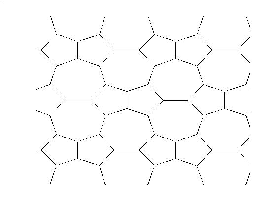
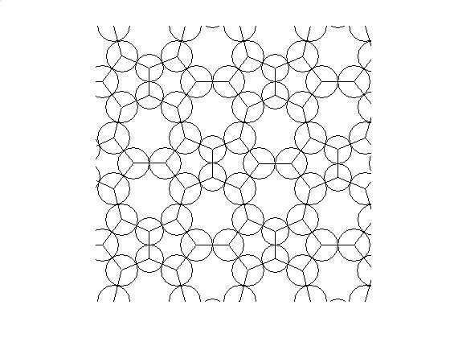
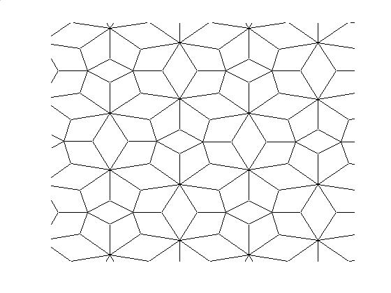
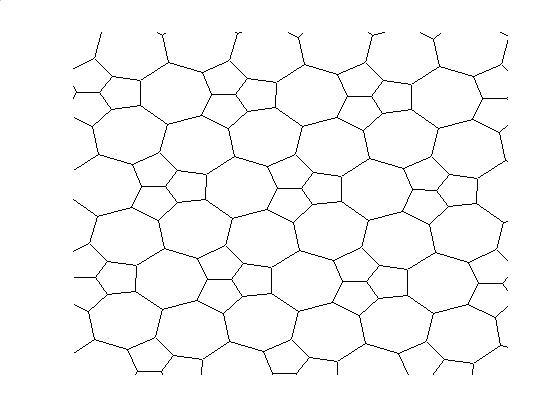
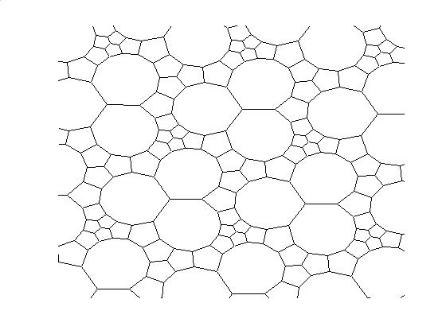
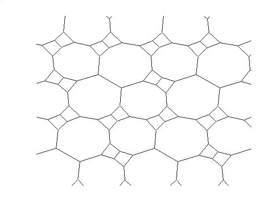
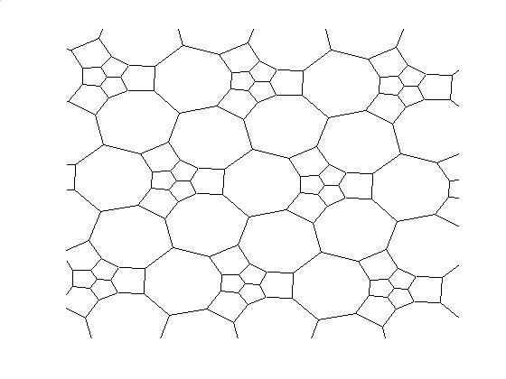

TorusDraw
TorusDraw is a Matlab-based program designed for drawing toroidal maps on a 2D plane by representing their universal covers. It utilizes advanced circle packing algorithms to transform combinatorial map data into meaningful geometric coordinates.
Core Features
- Pure Matlab Implementation: Does not require any external toolboxes. Supports exports to PostScript, BMP, and other standard formats.
- Flexible Visualization: Choose to render edges, primary circles, dual edges, or dual circles.
- Numerical Optimization: Employs a gradient-based method to minimize the error functional of the circle packing.
- Integration: Seamlessly works with the PlanGraph package via the
PlanGraphToTorusDrawfunction to generate necessary input files.
Algorithm Reference
The coordinate extraction is based on the polynomial-time circle packing methodology defined by:
Bojan Mohar, "Circle packings of maps in polynomial time", European Journal of Combinatorics (1997).
Examples & Usage
The following examples demonstrate different visualization modes using the test structure: thetest.plg, thetest.spa, thetest.bip.
Edges Only
TD_CreateGraph('thetest',[-10 10 -10 10],[1 0 0 0],[0 0 1 0 0 0],[0 0],[1 0;0 1])

Edges + Circles
TD_CreateGraph('thetest',[-10 10 -10 10],[1 0 0 0],[0 0 1 1 0 0],[0 0],[1 0;0 1])

Radial Graph
Map obtained by taking the union of vertices and faces as the new vertex set.
TD_CreateGraph('thetest',[-10 10 -10 10],[1 0 0 0],[0 1 1 0 0 0],[0 0],[1 0;0 1])

Illustrations



